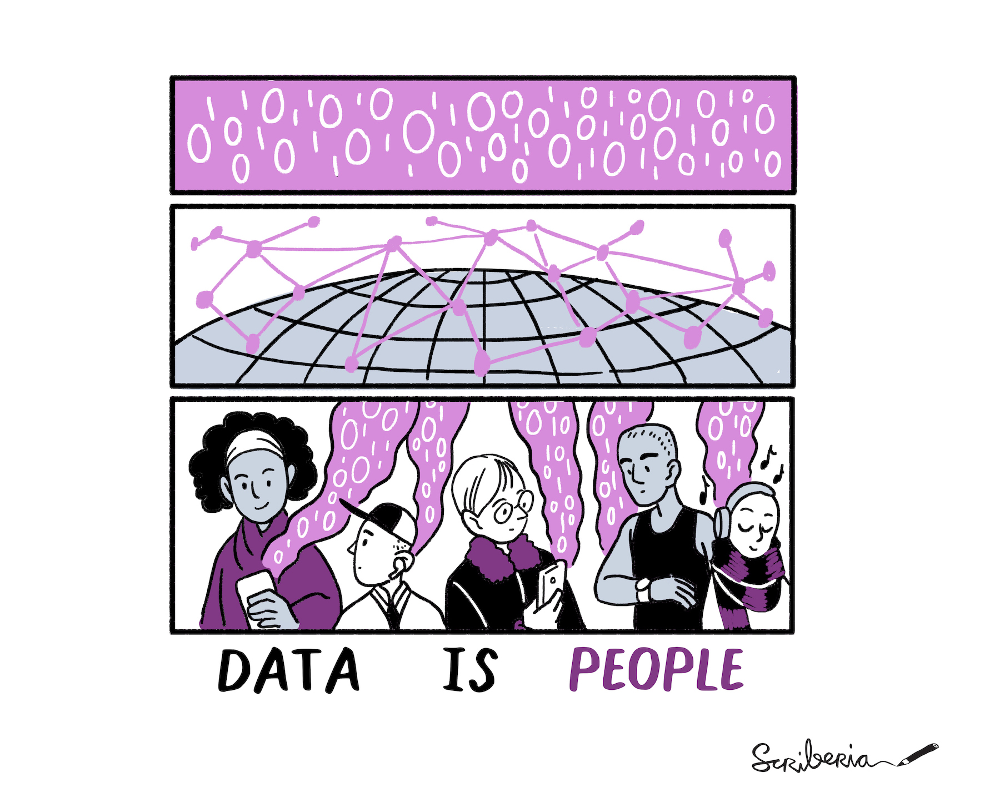
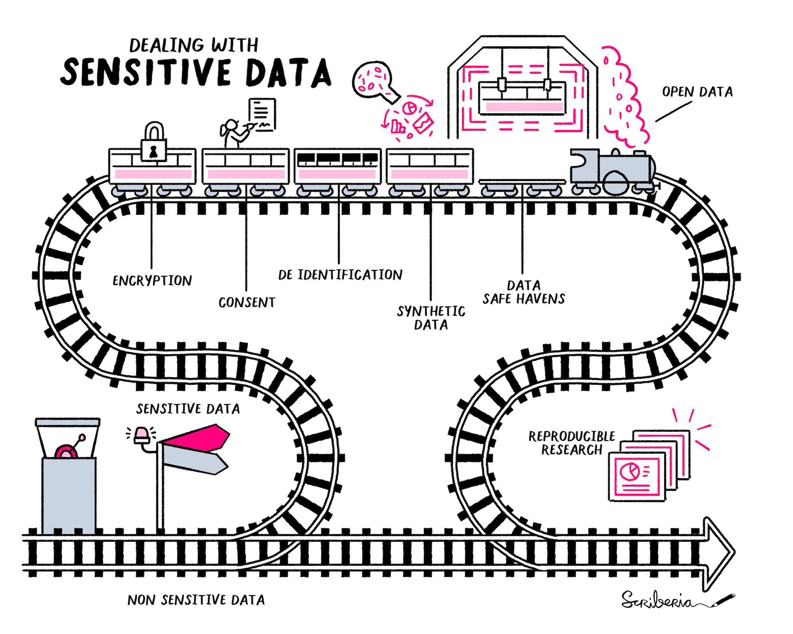
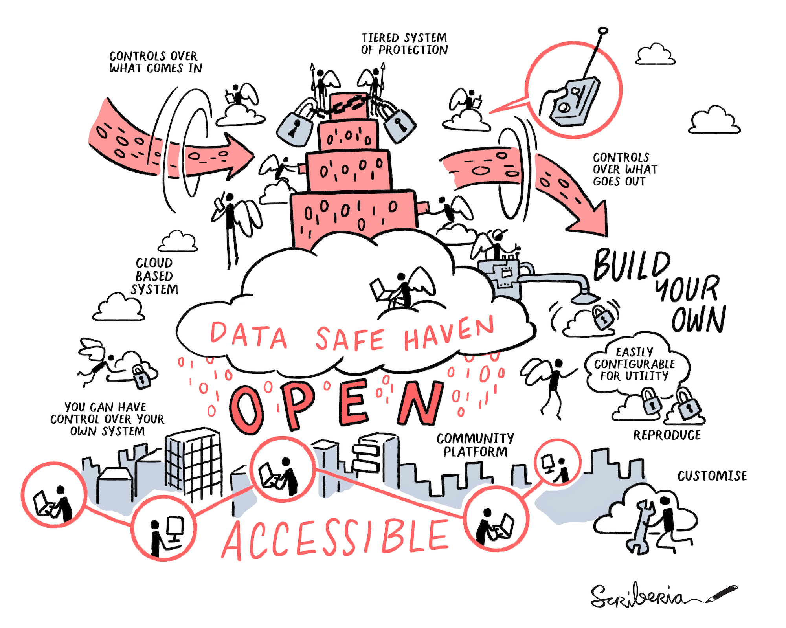
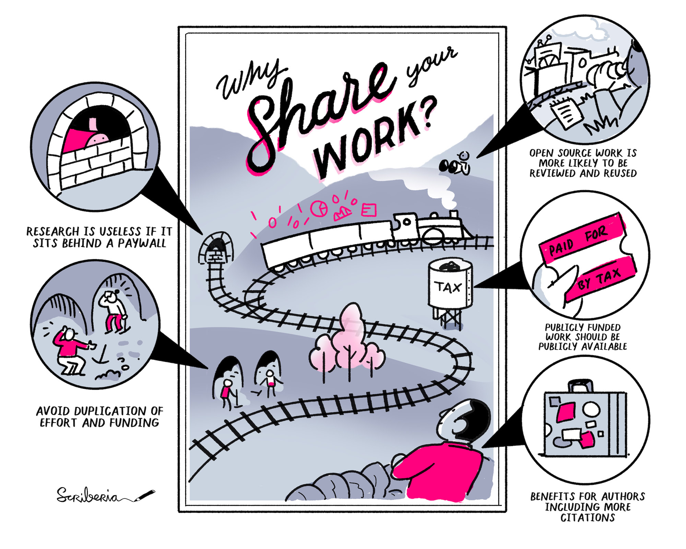
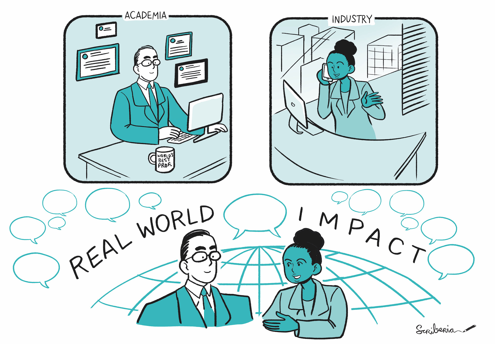
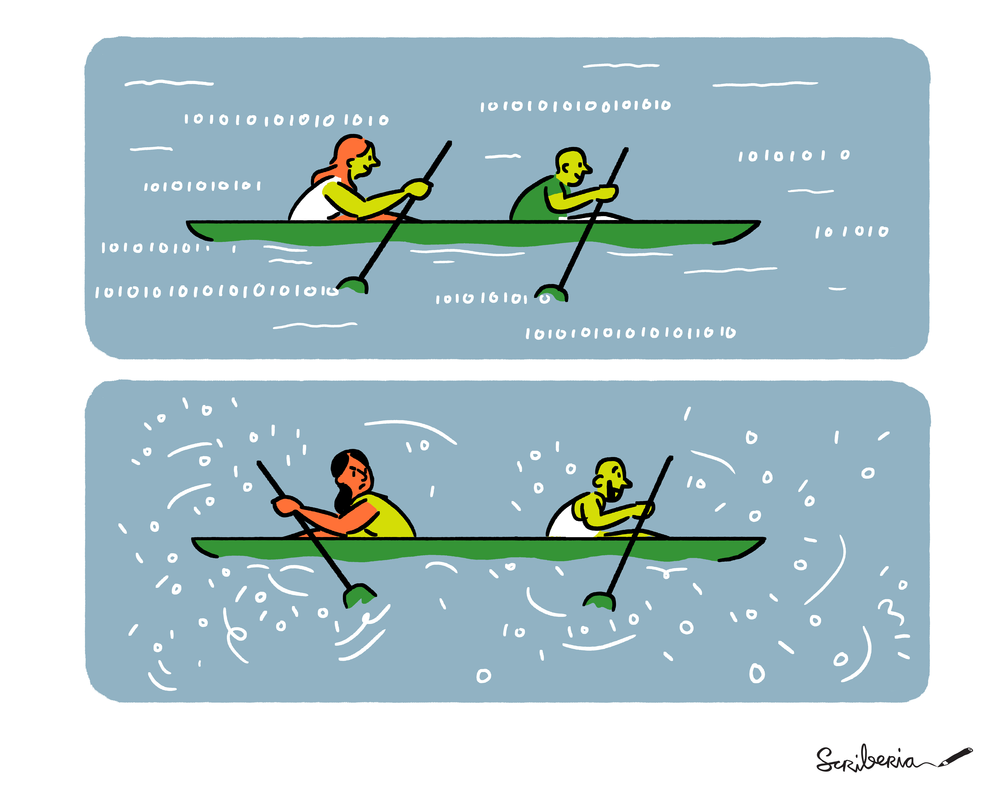
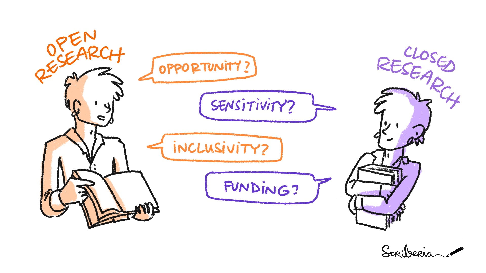
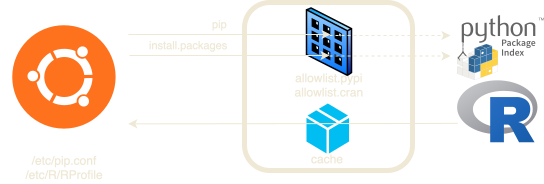
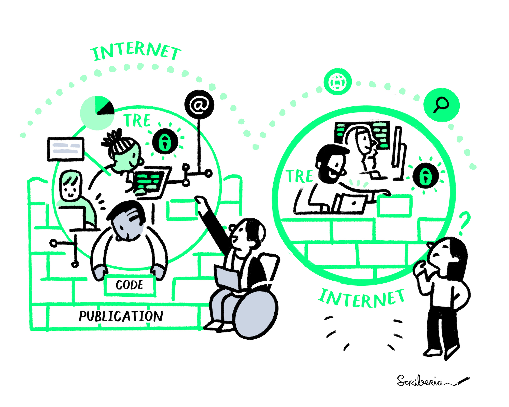
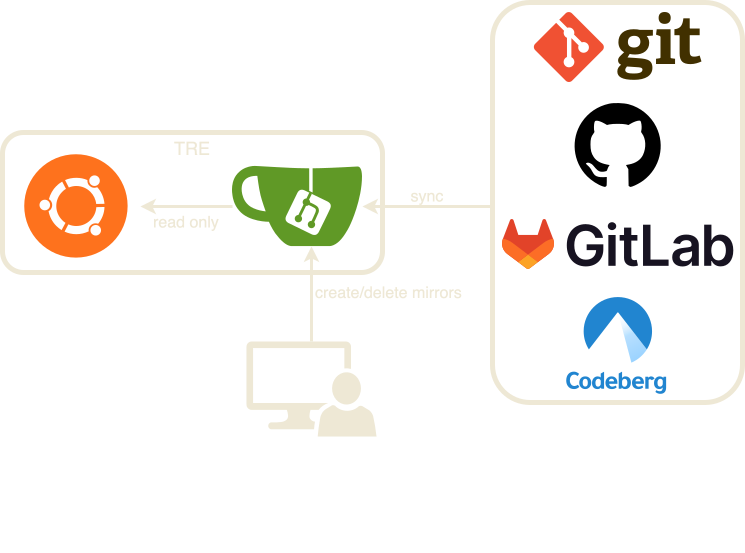

Building a Secure and Productive TRE: How I Learned to Stop Worrying and Proxy PyPI
Jim Madge
Alan Turing Institute
Why sensitive data?

Data Is People by Scriberia. Used under CC-BY 4.0 10.5281/zenodo.8169292
- Research uses data
- Research can produce results that benefit society
- Some data useful for research is sensitive including
- Medical data
- Administrative data
- Financial data
Why TREs?

Sensitive Data by Scriberia. Used under CC-BY 4.0 10.5281/zenodo.8169292
- Sensitive data may be unavailable for research
because of (absolutely justified) privacy and security concerns
- We could miss the benefits of research using that data
- TREs are a solution to that conflict
- More secure than sharing data with individuals/teams
- Can't leave a TRE on the train
- Potential for standards and accreditation
- Trust is more distributed (enables 5 safes)
- **However**
- Should provide tools to help researchers work effectively
- Link to rest of talk
- What does that look like?
- Sometimes TREs focus on security at the expense of
- productivity
- reproducibility
- effectiveness
Data Safe Haven
What is real security?
Trusted research wisdom
Enabling researchers
- Introduction to our TRE project, DSH
- Talk about attitudes to working with sensitive data
Perhaps dispel some myths
- Share some lessons from our experience developing and managing TREs
- Look at some highlights of how we enable effective research in DSH
Genesis
- Data science hackathon using sensitive data in 2017
- Poor experience with existing TRE
- Lack of built-in essential software
- Work delayed during software request process
- Difficult to be productive
- Hampered achievements
- First event run with DSH beta in 2018
Our aim
To create an environment we could use for world class data science .
To balance security with productivity .
- Original goal, based on poor experience
- To create an environment we could use for world class data science
- Achieving this meant finding a better balance between security and productivity
- We were solving our own problem initially
Being able to run events and conduct our research
To remove barriers to working safely and effectively with sensitive data,
by promoting and demonstrating a culture of open, community-led development
of interoperable foundational infrastructure and governance .
- As the project has progressed we have become more community minded
- Trying to solve the larger problems
- Through the design of our work
- But also through contribution to community projects
- North star
A TRE implementation

Data Safe Haven by Scriberia. Used under CC-BY 4.0 10.5281/zenodo.8169292
github.com/alan-turing-institute/data-safe-haven
- Open source IAC defined TRE
- reproducible
- configurable
- Tiered access controls
- Can be used for open, non-sensitive data
- Can be used for anonymised medical data
- Tier for identifiable medical data, though we don't handle it
- Remote desktop interface through a browser
- Can be used on site or remotely
An open research project

Share Work by Scriberia. Used under CC-BY 4.0 10.5281/zenodo.8169292
- Open documentation and processes
- Can be used and adapted by others
- A TRE is not just the code or infrastructure
You also need policies and processes
- Papers
- Influential architecture paper
- Informed TRE designs - Microsoft
- Influenced organisations - AWS, DARE UK
- SATRE
- Project in collaboration between Turing, Dundee, UCL, RDS, HIC, Lay participants
- Building an open standard for TREs
- Now influencing NHS SDE requirements
- Three published self-assessments (Turing, HIC, UCL)
- Assessments in progress for Crick and Aridhia
A production deployment

Academic-Industry Partnership by Scriberia. Used under CC-BY 4.0 10.5281/zenodo.8169292
alan-turing-institute.github.io/trusted-research
- DSGs
- Week long hackathon style events
- Data providers from public and private sectors
- Projects
- Turing research projects
- Used in production outside The Turing
- Nottingham
- East Midlands NHS SDE (provided by Nottingham)
- Exeter (DSG) (only?)
- Handled diverse data
- Commercially sensitive
- Medical
- Financial(?)
Data Safe Haven
What is real security?
Trusted research wisdom
Enabling researchers
Security maximalism

Code Review Directions by Scriberia. Used under CC-BY 4.0 10.5281/zenodo.8169292
- We need to handle sensitive data with care and respect
- It is therefore tempting to do everything you can do increase security
- If you can improve security, why wouldn't you?
- However,
- Not all improvements are significant (security theatre)
- _e.g._ periodic password reset
- These improvements may hamper work
- Some may even cause more harm than good
- Extra maintenance burden
- Extra admin burden
- Loss of productivity
In reality

Open vs Closed Research by Scriberia. Used under CC-BY 4.0 10.5281/zenodo.8169292
- **You cannot eliminate risk**
- Every piece of work starts with a negotiation about what _acceptable_ risk is
- Remember, there is value to the work otherwise you wouldn't do it at all
- You need to balance the value of the outputs with the risk of disclosure
Data Safe Haven
What is real security?
Trusted research wisdom
Enabling researchers
One size does not fit all
No single security configuration for all work
One configuration = the most strict
In DSH
Set of security tiers with technical and policy controls
- There is no single set of security rules suitable for all work
- If you only have one, it will be for the most sensitive data you handle
- Everyone else will suffer from unnecessary restrictions
- In DSH:
- We have created a set of tiers which apply to workpackages of different sensitivities
- These tiers work for us, but others will likely want to establish a different set
- Tiers correspond to sets of technical controls
Egress is worse than ingress
New data can elevate risk
E.g. key to re-identify individuals
Top priority: prevent unapproved data egress
In DSH
Work package classification
Expectations for user training and behaviour
- Bringing data in could elevate risk/sensitivity (for example a key to reidentify individuals in a psuedonymised data set)
- Fundamentally, you want to prevent unapproved data disclosure
- However, if your environment is secure, the disclosure is extremely limited (to only people with access)
- You can distribute risk following the 5 Safes framework
- In DSH:
- We define (holistic) work packages, which are not just input data but _all_ input data and the intended outputs
- Assess risk in advance to avoid surprises (maybe this is a different lesson, plan ahead?)
- We set out expectations for users training and behaviour
We share this in our open documentation
Vulnerability is not the same in a TRE
CVE scores don't apply well to TREs
Even malicious code may not present a significant risk
Should be robust to privilege escalation and bad actors
In DSH
Data flow is blocked at an infrastructure level
Allow packages from CRAN and PyPI
Read-only Git mirrors
- Donald Scobbie's (EPCC) way of thinking
- Existing ways of assessing threat like CVE don't apply well to TREs
- Network exploits, for example, are likely of no concern as there will be no way to use them
- Bringing in malicious code isn't much of a concern if the worst you can do is trash your workspace
- A TRE should be robust to privilege escalation and bad actors
- In DSH:
- Originally created (limited) mirrors of CRAN and PyPI
- We allow packages from CRAN/PyPI proxy and git mirror
- We take the approach that the environments should be secure to attack from inside
- Network is restricted at an infrastructure level
- Even privilege escalation does not allow data egress
- Lesson:
- There should be no trade off between usability and security here
- If your TRE is secure, you shouldn't be particularly worried about malicious code inside the environment
- At worst it should only cause loss of time/availability (backups, redundancy, reproducible deployments)
- Restricting the software available is more about appeasing partners(?)
Certifications are not security
Certifications don't make a system a TRE
May distract from what is important
- Data owners may ask for specific certifications
- These are often a good sign of following best practice
- However, they do not constitute a guarantee of security and they do not ensure the kinds of processes/controls necessary for a safe TRE
- Focusing your requirements for a TRE on a certification is unhelpful, and possibly dangerous.
It distracts from the actual essential qualities of a TRE.
- In DSH:
- No ISO27001 (yet).
- DSPT which is necessary for handling NHS data
- Self-certification
- Interesting experience as it was clearly designed with GP surgeries _etc._ in mind
- SATRE
- We collaborated on creating the first "specification" for a TRE
- There are a number of assessments
- NHS is using SATRE to build its SDE specification (hopefully they contribute back!)
- Work with data providers, explaining what we do and what risks there are.
Technical controls are not sufficient
Technical solutions for a people problem
There is no technology to prevent disclosure
In DSH
Fairly trivial data ingress
Cannot prevent (inefficient ) data egress
Technical controls in combination with policy
- There is a tendency for people to ask/imagine/wish for a technical solution to a people problem
- Ultimately, we cannot prevent disclosure with technology
- _e.g._
- Egress is trivial using a camera
- Egress is trivial using a pen and paper
- In some cases egress is trivial by taking screenshots (this could be automated)
- Ingress is trivial using keyboard macros/rubber ducky
- Demonstration using Keybow2040
- Ingress is trivial by typing out documents
- Ingress is trivial by memorisation
- It is completely reasonable to use other controls when a technical solution is impossible, **and** when it is impractical or comes at the cost of usability.
- Think back to the five safes, safe people, safe policies(?)
- In DSH:
- We use both policy and technical controls
- We make our approach open through DSH documentation, and the documentation of our production TRE service
- We are happy for others to use, modify, contribute to these
- Data incidents(?)
Communication solves problems
Data owners can have a skewed impression of risk
Security maximalist approach
If you run a TRE, you are an expert
In DSH
Explain the trade off between security and productivity
Aim to find a good balance
- Data owners can have a skewed impression of risk
- May ask for specific, overbearing restrictions/requirements
- Often request higher security than is necessary
- Again, the security maximalist approach
- Why accept less than the most?
- They are strongly incentivised to minimise the likelihood of disclosure
but they are probably not experts on TREs or the risk
- If you operate a TRE, *you* are an expert
- Trust your experience
- You shouldn't always do what you are asked
- In DSH:
- We have found providers who greatly overestimate the security needed
- Explain how restrictions hinder work
- Arrive at a more reasonable set of controls and make work more productive
Data Safe Haven
What is real security?
Trusted research wisdom
Enabling researchers
Batteries included workspace
- Workspace includes important packages for research/data science
- Provide all users with tools we expect they may need
- Avoid slowdown due to common requests
- Categories
- Programming languages
- IDEs/editors/development tools
- Document writing
- Services
- In the future may break out into bureau
- For higher security environments,
updates can be supported through replacing VM image with the latest automatic builds
- Link: what about supporting important data science repositories?
PyPI and CRAN proxy

- Access to packages from the largest Python and R repositories
- Grants access to a huge range of packages, many of which are critical for researchers
- Data analysis
- Modelling
- ML
- Configurable, any package or only those from an allow list
- Achieved by managing a Sonatype Nexus instance
- Split off into a standalone project
- Container image can be used by others
Develop outside, run inside

Code Publication by Scriberia. Used under CC-BY 4.0 10.5281/zenodo.8169292
- Removes restrictions on development
- Better enables best practice (open source, version control, CI)
- Prevents code outputs of research being lost or stuck inside TREs
Develop outside, run inside

- Implemenation
- Gitea
- Function apps to interact with Gitea API
- And
- As always, this is in the open
- Tracked in our milestones and project roadmap
- Policies/processes are shared
- Worked with users in Nottingham to help understand if our ideas would meet their needs
Acknowledgements
Scriberia , who we work with to make the excellent, openly licensed, illustrations
- Current DSH team members
- Former DSH team members
- All DSH contributors
- TRESA
- Scriberia
- SATRE collaborators
- UK TRE community